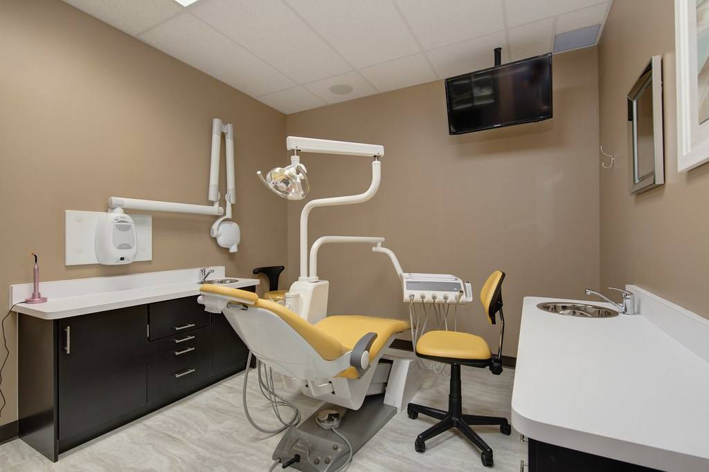

Nuevos pacientes, casos de alto valor y sillones llenos — sin el caos en la recepción. IEC OS gestiona el crecimiento de las prácticas dentales mientras usted se concentra en la odontología.
Obtenga una auditoría de visibilidad gratuita
El flujo de pacientes va por detrás de la construcción. Si usted está agregando consultorios, el marketing debe avanzar antes de que termine la obra — no después. IEC OS secuencia el crecimiento para que los nuevos sillones abran llenos.
Búsqueda local, clasificación en mapas y campañas ajustadas para una sola cosa: que los nuevos pacientes reserven. Medido en citas reservadas, no en clics.
Las reseñas de Google deciden la clasificación en los mapas locales para los dentistas. A cada paciente satisfecho se le pide una reseña antes de salir del edificio. Supere a cada competidor en su zona.
Su trabajo de mayor margen merece su propia cartera. Captación y educación dirigidas que llenan las consultas de implantes y estética — no solo las limpiezas.
Los pacientes inactivos son los nuevos ingresos más económicos en odontología. Recordatorios automatizados para higiene vencida y campañas de recuperación para pacientes que no se han visto en más de 18 meses.
Los pacientes reservan directamente — visitas de nuevos pacientes y consultas, de día y de noche. Menos llamadas perdidas, menos espacios vacíos.
Sus credenciales son oro para el marketing. IEC convierte la autoridad del médico, la educación sobre casos y las historias de pacientes en contenido que atrae a las personas.
El crecimiento crea carga operativa: contratación, facturación, acreditación, cumplimiento. Los servicios de MSO de IEC la absorben para que la expansión no lo saque del consultorio.

Auditoría de visibilidad gratuita: su perfil de Google, su posición en reseñas frente a los competidores y la fricción en las reservas. Informe en una semana.
El motor de reseñas y las reservas en línea se activan. La ruta más rápida hacia un nuevo flujo de pacientes.
Cartera de casos de implantes, campañas de recordatorio y servicios de MSO a medida que usted crece.